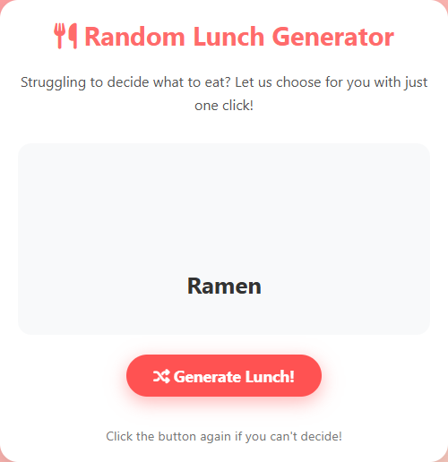
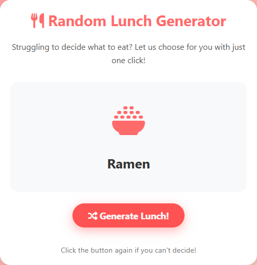
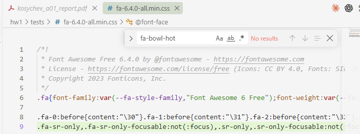
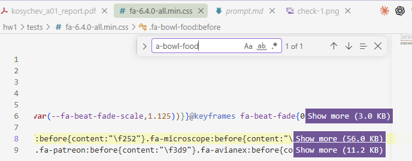

The course starter app "Random Lunch Generator" sometimes shows a dish name with an empty box
instead of its icon. I traced the bug in the given prompt and code and found that 3 of the 12 menu
items use Font Awesome class names (fa-bowl-hot, fa-pasta, fa-bowl) that do not exist in the
loaded Font Awesome 6.4.0 Free stylesheet. A headless Chrome test showed 9/12 icons rendered before the fix
and 12/12 after it, and the blank rate over 10,000 simulated clicks dropped from 24.9% (theory: 3/12 = 25%) to 0%.
The takeaway is that LLM-written code can use icon names that look real but are not in the library, and "sometimes" bugs
in random apps are often a fixed defect hit with some probability.
Index Terms — AI-assisted debugging, Font Awesome, hallucinated API, prompt correction, web app
Problem statement. The Week 1 homework provides a prompt (week1/prompt.md) and the resulting
single-file app (week1/index.html) from the course repository [1]. The TODO on the lecture slide is to
understand and fix "the issue of images sometimes not displaying". The instructor asked us to fix the
given code and prompt, not to write a new version from scratch.
Motivation. This app is the base for later assignments ("random → AI-personalized"), so a visual defect would carry over. The exercise also trains a team skill: reading someone else's AI-generated prompt and code and finding where the AI was wrong.
Concrete example. Click "Generate Lunch!" → the random pick is Ramen → the card shows the text "Ramen" above an empty grey area (Fig. 1, left). Clicking again → Pizza → the icon is shown normally.
Contributions.
index.html and prompt.md (diffs in the repository), checked with an automated browser test.References used (full list at the end): the course starter repository [1]; the exact
Font Awesome 6.4.0 stylesheet the app loads [2]; the Font Awesome icon search with the Free filter [3];
MDN documentation of getComputedStyle and ::before [4], [5]; Playwright for Python [6].
Alternatives considered.
assets/food-icons/, as the README suggests) — full control, but the images do not exist and would have to be created; out of scope.Approach. I did not rewrite the app. I (i) read the prompt and code to find how an icon gets to the screen, (ii) checked every class name used against the stylesheet that the page actually loads, (iii) measured rendering in a real browser, and (iv) applied the smallest change to the code and to the prompt that removes the cause, plus a safety fallback.
Pipeline. lunchMenu[i].icon (string) → innerHTML = <i class="fas fa-…"> →
Font Awesome CSS rule .fa-…:before { content: "\fXXX" } → glyph from the webfont.
If no CSS rule matches, ::before has content: none, the <i> has 0 px width and nothing is drawn — and there is no error
in the console. This is why the bug is silent.
Tools & libraries. Font Awesome Free 6.4.0 via cdnjs [2]; Google Chrome 152.0.7977.84 (headless); Playwright for Python 1.58.0 [6]; Python 3.12; Claude Code 2.1.273 (VS Code extension) with Claude Opus 5.
Key design decisions.
fa-bowl-rice, Pasta → fa-plate-wheat,
Soup → fa-bowl-food. All three exist in 6.4.0 Free. Font Awesome has no noodle or pasta icon, so these are the closest existing ones.getComputedStyle(icon, '::before').content [4];
if it is none, it shows fa-utensils. A future wrong name then shows a generic icon, not a blank box.prompt.md fixes Font Awesome 6.4.0 Free,
asks for a table of icon classes checked against the CSS, requires the fallback, and makes the README match the real
single-file structure (it listed style.css, script.js, assets/ and LICENSE.md, none of which exist).fa-hamburger and fa-random are Font Awesome 5 names, but 6.4.0 still defines them as aliases
(.fa-burger:before,.fa-hamburger:before in [2]), so they render and I did not change them.clearTimeout of the pending timer, so a fast second click does not briefly show the old result.Configuration. Test viewport 600×700; wait 1100 ms per pick (500 ms delay + 500 ms fade-in);
item i is forced by replacing Math.random with () => (i + 0.5) / 12; Monte-Carlo seed 42, 10,000 clicks.
Command: python tests/check_icons.py.
Setup. Both starter/index.html (unchanged copy of commit d8a178a of [1]) and fixed/index.html are opened
from disk in headless Chrome with the live cdnjs stylesheet. For each of the 12 items the script records the
::before content and the width of the <i>. A separate script check searches for every fas fa-* class in the downloaded CSS file.
Results.
| Item | Starter class | Starter | Fixed class | Fixed |
|---|---|---|---|---|
| Pizza, Sushi, Burger, Salad, Tacos, Sandwich, Curry, Steak, BBQ | (unchanged) | 9 × OK | (unchanged) | 9 × OK |
| Ramen | fa-bowl-hot |
blank (none, 0 px) |
fa-bowl-rice |
OK (\ue2eb, 64 px) |
| Pasta | fa-pasta |
blank (none, 0 px) |
fa-plate-wheat |
OK (\ue55a, 64 px) |
| Soup | fa-bowl |
blank (none, 0 px) |
fa-bowl-food |
OK (\ue4c6, 64 px) |
| Rendered | 9 / 12 | 12 / 12 | ||
| Blank rate, 10,000 clicks | 24.91 % | 0 % |


Fig. 1. The same pick (Ramen) before (left, empty icon area) and after the fix (right). Screenshots from the test script.
Comparison vs. baseline. The starter fails on exactly the three items whose classes are missing from the
CSS. The class search gives the same three names: bowl, bowl-hot, pasta. So the measured
24.91% matches the expected 3/12 = 25% (the difference comes from sampling). After the fix, no classes are missing and all 12 items render.
Verification.
fa-bowl-hot. The page showed
fa-utensils (rendered), so the fallback works.\f818) is the same as
.fa-pizza-slice:before{content:"\f818"} in the stylesheet.Failure case. Starter, pick = Ramen: <i class="fas fa-bowl-hot">, computed ::before content
none, width 0 px, no console error. The card shows only the text "Ramen".
Root cause. The code that shows the icon is correct. The data is wrong: three class names in lunchMenu
look like real Font Awesome names but are not defined in the loaded version. The prompt asked for "a
relevant icon or image" without fixing a version or asking for a check, so the model invented
plausible names — the "hallucinated API" failure mode. The word "sometimes" comes only from Math.random():
the defect is always there, and a user hits it on 1 of 4 clicks.
Fix + verification. Detection: per-item browser test (9/12) and the CSS class search (3 missing names).
Change: three class names, a ::before fallback, clearTimeout, and the corrected prompt.
Confirmation: 12/12 rendered, 0% blank rate, fallback and timer tests pass (Section 4).
What worked.
::before content: it shows the real cause directly, which a screenshot alone does not.What surprised me / didn't work.
fas fa-* class strings.Next improvement. Add a CDN-failure fallback: if the Font Awesome stylesheet does not load, the
::before check fails for every item. The page could then switch to emoji or a self-hosted copy of the icons, so it
still shows a picture offline.
AI tools used. Claude Code 2.1.273 (VS Code extension), model Claude Opus 5, one session (see
kosychev_a01_session.json).
How AI was used.
week1/.fixed/index.html and fixed/prompt.md; the report build script.What I personally verified.
starter/index.html, built from the original prompt) locally and confirmed that the bug is real:
Ramen, Pasta and Soup appear without an icon.fixed/index.html) locally, clicked until I got these three dishes, and confirmed that each of them now shows an icon.tests/fa-6.4.0-all.min.css myself and searched for the old name fa-bowl-hot: no results
(Fig. 2, left). Searching for the new name fa-bowl-food gave 1 result, the rule .fa-bowl-food:before (Fig. 2, right).

Fig. 2. Manual check in the Font Awesome 6.4.0 CSS: fa-bowl-hot — no results (left); fa-bowl-food — 1 of 1 (right).
What I trusted without verification. That the Monte-Carlo loop in check_icons.py models the page
correctly (it reuses the per-item results rather than clicking 10,000 times in the browser); the Chrome and
Playwright versions printed by the script.
Session log. kosychev_a01_session.json is the unmodified Claude Code log of this work.
[1] S. Jin, "RecSys-LLMs: Recommender Systems course repository (week1: prompt.md, index.html)," GitHub, 2025. [Online]. Available: https://github.com/dryjins/RecSys-LLMs. [Accessed: 2026-09-16].
[2] Fonticons, Inc., "Font Awesome Free 6.4.0 — all.min.css," cdnjs. [Online]. Available: https://cdnjs.cloudflare.com/ajax/libs/font-awesome/6.4.0/css/all.min.css. [Accessed: 2026-09-16].
[3] Fonticons, Inc., "Font Awesome icon search," [Online]. Available: https://fontawesome.com/search. [Accessed: 2026-09-16].
[4] Mozilla Developer Network, "Window: getComputedStyle() method," MDN Web Docs. [Online]. Available: https://developer.mozilla.org/en-US/docs/Web/API/Window/getComputedStyle. [Accessed: 2026-09-16].
[5] Mozilla Developer Network, "::before," MDN Web Docs. [Online]. Available: https://developer.mozilla.org/en-US/docs/Web/CSS/::before. [Accessed: 2026-09-16].
[6] Microsoft, "Playwright for Python — Installation," Playwright Docs. [Online]. Available: https://playwright.dev/python/docs/intro. [Accessed: 2026-09-16].